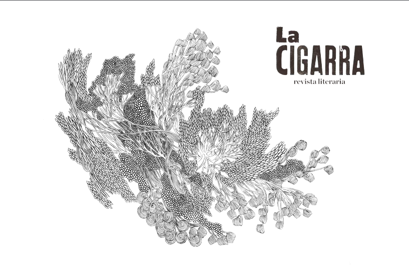
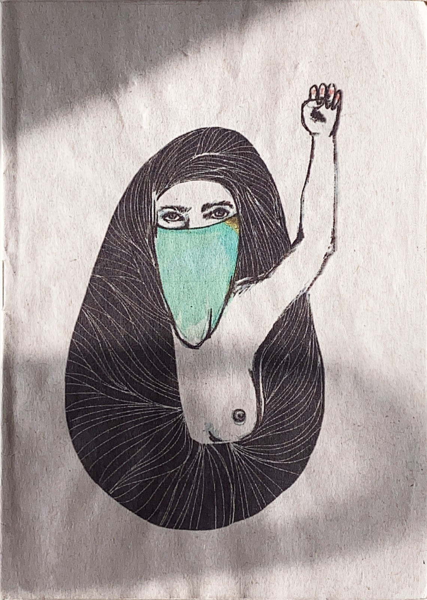
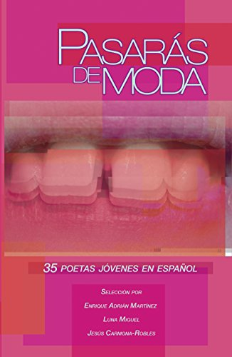
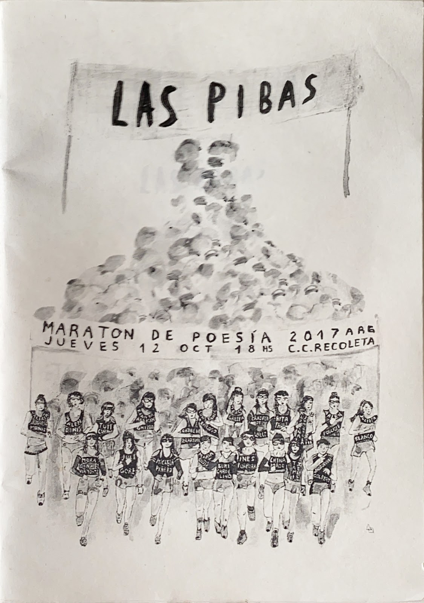
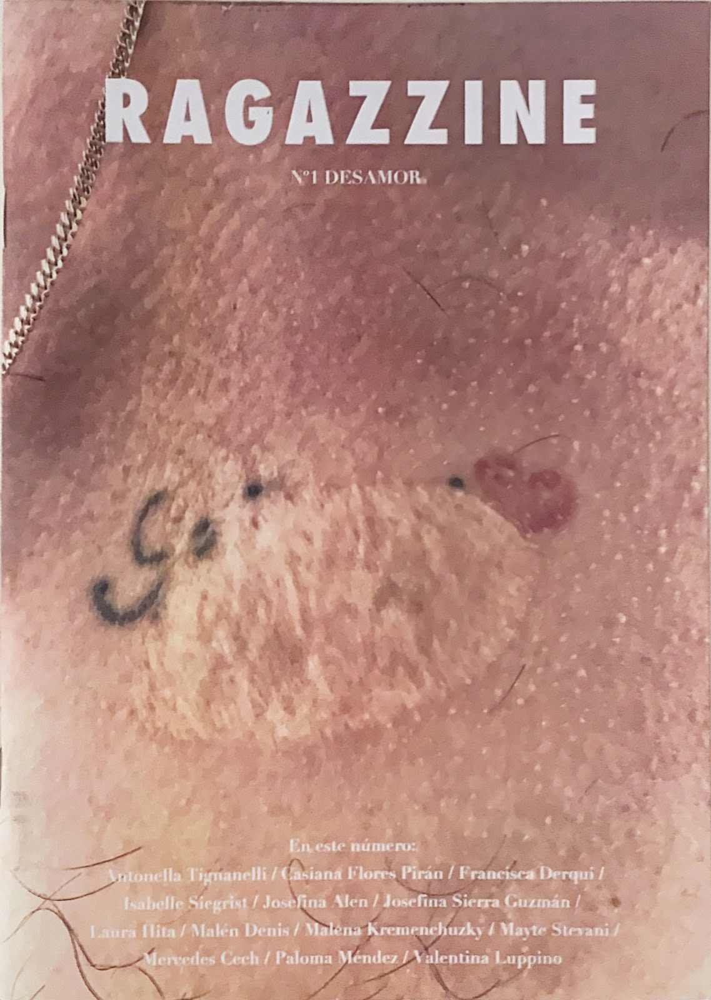
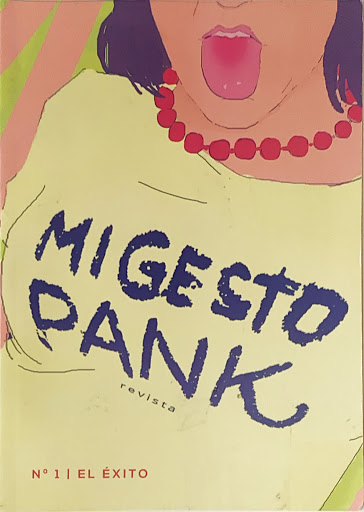
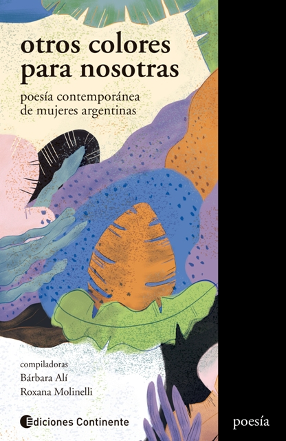

Publicaciones
Compilaciones


Miércoles Negro, Fanzine de Emergencia
2016, Buenos Aires
Colectivo de artistas autoconvocadas

Pasarás de moda (35 poetas jóvenes en español)
2017, Montea, Guanajuato, México
Compilación de 35 jóvenes poetas en español, selección de Enrique Adrián Martínez, Luna Miguel y Jesús Carmona-Robles.

Las Pibas
2017, Buenos Aires
Fanzine de la Maratón de Poesía

Ragazzine
2017, Buenos Aires
Fanzine feminista compilado por Valentina Luppino

Mi gesto punk
2018, Buenos Aires, Argentina
Compilación de literatura feminista argentina.

Otros colores para nosotras
2018, Ed Continente
Compilación de poesía contemporánea argentina.